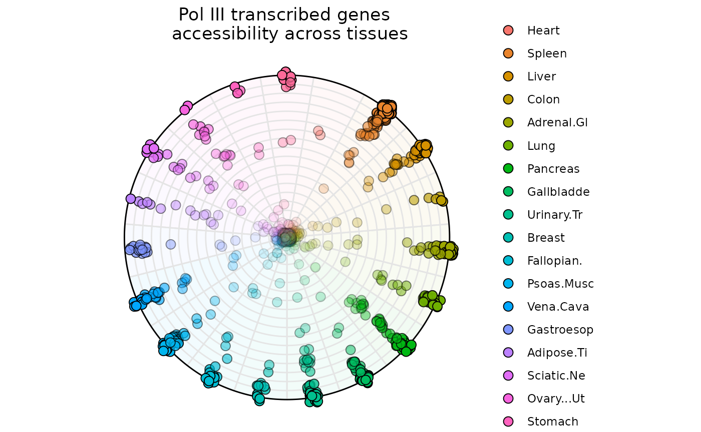
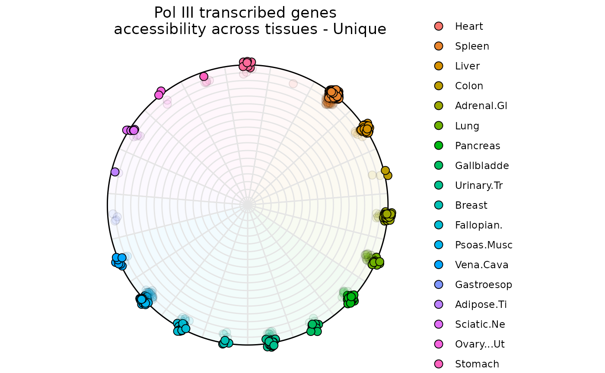

Introduction to dominatR
Simon Lizarazo, Ethan Chen, Rajendra K C, Kevin Van Bortle
Source:vignettes/dominatR.Rmd
dominatR.RmdOverview
dominatR is a genomic data visualization package that
applies concepts drawn from physics - such as center of mass
from classical mechanics and Shannon’s entropy from statistical
mechanics - to effectively visualize features (e.g. genes) that are
present within a specific context or condition (e.g. tissue-specific
gene expression). dominatR is able to integrate
dataframes, matrices and
SummarizedExperiment objects, perform a number of common
genomic normalization methods, compute center of mass, entropy, and
categorical entropy values, and generate customizable plots that serve
to highlight context-relevant feature dominance. In all examples,
dominance visualization is linked to the coordinate spatial localization
of each data point, such that full feature dominance is projected at the
radial extreme.
dominatoR package functions can be subgrouped into the
following categories:
-
Normalization Functions: Contains basic normalization methods, such as:
cpm_normalizationminmax_normalizationquantile_normalizationrpkm_normalizationtpm_normalization
-
Calculation Functions: Contains feature calculation methods, such as:
centmassentropyQentropy
-
Visualization Functions: Contains three different visualization tools, ideal for assessing dominance in 2, 3 and N Dimension:
plot_ropeplot_triangleplot_circle
This vignette serves as a quick tutorial for using
dominatR. Further descriptions and examples of
customization and the additional features present in the package can be
explored in the companion articles.
Data normalization; computing and plotting feature dominance
The data included in this vignette can be found in the
airway dataset and the supplementary package
dominatRData
Normalization functions (e.g. quantile normalization)
Example 1: SummarizedExperiment object
data("airway")
se = quantile_normalization(airway, new_assay_name = 'quantile_norma')
head(se)
#> class: RangedSummarizedExperiment
#> dim: 6 8
#> metadata(1): ''
#> assays(2): counts quantile_norma
#> rownames(6): ENSG00000000003 ENSG00000000005 ... ENSG00000000460
#> ENSG00000000938
#> rowData names(10): gene_id gene_name ... seq_coord_system symbol
#> colnames(8): SRR1039508 SRR1039509 ... SRR1039520 SRR1039521
#> colData names(9): SampleName cell ... Sample BioSample
head(assay(se, 'quantile_norma'))
#> SRR1039508 SRR1039509 SRR1039512 SRR1039513 SRR1039516
#> ENSG00000000003 690.875 504.750 773.875 613.75 1010.000
#> ENSG00000000005 0.000 0.000 0.000 0.00 0.000
#> ENSG00000000419 468.875 582.375 550.625 552.00 516.875
#> ENSG00000000457 257.375 241.375 225.250 254.00 213.125
#> ENSG00000000460 58.000 65.250 31.500 53.75 67.750
#> ENSG00000000938 0.000 0.000 1.250 0.00 0.375
#> SRR1039517 SRR1039520 SRR1039521
#> ENSG00000000003 757.375 878.250 608.750
#> ENSG00000000005 0.000 0.000 0.000
#> ENSG00000000419 582.125 467.500 541.625
#> ENSG00000000457 244.125 257.375 251.125
#> ENSG00000000460 48.375 79.875 66.000
#> ENSG00000000938 0.000 0.000 0.000Example 2: dataframe object
data("atac_tissue_counts")
## selecting the numeric columns
norm = atac_tissue_counts[,8:26]
norm1 = quantile_normalization(norm)
head(norm1[,1:10])
#> Heart Spleen Liver Colon Adrenal.Gland Lung
#> [1,] 11.26316 15.36842 13.00000 21.73684 13.789474 11.15789
#> [2,] 1369.78947 2997.36842 1679.36842 1422.52632 1486.421053 1549.94737
#> [3,] 17.78947 32.26316 57.89474 25.15789 21.789474 26.31579
#> [4,] 15.63158 14.78947 19.52632 22.78947 8.263158 15.26316
#> [5,] 17.78947 21.84211 20.84211 21.73684 15.000000 21.36842
#> [6,] 13.52632 18.57895 16.21053 17.89474 10.473684 13.10526
#> Pancreas Gallbladder Urinary.Tract Breast
#> [1,] 9.052632 11.89474 12.89474 14.26316
#> [2,] 1220.842105 1432.63158 1513.47368 1613.84211
#> [3,] 18.210526 16.84211 17.47368 19.42105
#> [4,] 14.894737 22.10526 14.68421 10.89474
#> [5,] 18.210526 20.00000 22.63158 16.52632
#> [6,] 10.631579 11.89474 25.10526 25.00000Calculation functions (e.g. entropy)
Example 1: SummarizedExperiment object
se = entropy(se)
head(se)
#> class: RangedSummarizedExperiment
#> dim: 6 8
#> metadata(1): ''
#> assays(3): counts quantile_norma Entropy
#> rownames(6): ENSG00000000003 ENSG00000000005 ... ENSG00000000460
#> ENSG00000000938
#> rowData names(11): gene_id gene_name ... symbol Entropy
#> colnames(8): SRR1039508 SRR1039509 ... SRR1039520 SRR1039521
#> colData names(9): SampleName cell ... Sample BioSample
### It creates a new column in the rowData dataframe
head(rowData(se))
#> DataFrame with 6 rows and 11 columns
#> gene_id gene_name entrezid gene_biotype
#> <character> <character> <integer> <character>
#> ENSG00000000003 ENSG00000000003 TSPAN6 NA protein_coding
#> ENSG00000000005 ENSG00000000005 TNMD NA protein_coding
#> ENSG00000000419 ENSG00000000419 DPM1 NA protein_coding
#> ENSG00000000457 ENSG00000000457 SCYL3 NA protein_coding
#> ENSG00000000460 ENSG00000000460 C1orf112 NA protein_coding
#> ENSG00000000938 ENSG00000000938 FGR NA protein_coding
#> gene_seq_start gene_seq_end seq_name seq_strand
#> <integer> <integer> <character> <integer>
#> ENSG00000000003 99883667 99894988 X -1
#> ENSG00000000005 99839799 99854882 X 1
#> ENSG00000000419 49551404 49575092 20 -1
#> ENSG00000000457 169818772 169863408 1 -1
#> ENSG00000000460 169631245 169823221 1 1
#> ENSG00000000938 27938575 27961788 1 -1
#> seq_coord_system symbol Entropy
#> <integer> <character> <numeric>
#> ENSG00000000003 NA TSPAN6 2.917466
#> ENSG00000000005 NA TNMD 0.000000
#> ENSG00000000419 NA DPM1 2.961022
#> ENSG00000000457 NA SCYL3 2.975398
#> ENSG00000000460 NA C1orf112 2.955338
#> ENSG00000000938 NA FGR 0.918296Example 2: dataframe object
norm1 = entropy(norm)
### It creates a new column in the dataframe
head(norm1[,10:20])
#> Breast Fallopian.Tube Psoas.Muscle Vena.Cava Gastroesophageal.Sphincter
#> 1 0.06137184 0.06859206 0.02166065 0.06137184 0.05415162
#> 2 0.02719477 0.05415596 0.08358637 0.05121959 0.04261070
#> 3 0.05176471 0.05176471 0.02117647 0.05647059 0.04705882
#> 4 0.04362416 0.07046980 0.03020134 0.05369128 0.04362416
#> 5 0.04679803 0.11576355 0.01970443 0.06896552 0.05665025
#> 6 0.07715134 0.04747774 0.02373887 0.05934718 0.08902077
#> Adipose.Tissue Sciatic.Nerve Ovary...Uterus Stomach Brain Entropy
#> 1 0.04332130 0.06498195 0.05415162 0.05415162 0.12635379 4.090040
#> 2 0.03967433 0.06907137 0.07921519 0.02816243 0.03717174 4.137985
#> 3 0.04235294 0.06117647 0.05176471 0.04235294 0.06823529 4.116397
#> 4 0.05704698 0.04362416 0.04697987 0.06711409 0.10402685 4.123750
#> 5 0.04926108 0.04679803 0.03940887 0.04187192 0.11576355 4.071279
#> 6 0.05341246 0.05934718 0.05341246 0.05044510 0.11275964 4.062376Visualization functions (2-, 3-, and N-dimensions)
All dominatR package functions are compatible with
SummarizedExperiment and data.frame objects.
This quick introduction will show examples using data.frame
objects. Each function produces a graphic and a data.frame
with the dominance results; setting the atribute
output_table = FALSE will restrict the dataframe from being
displayed. For more details and examples on usage and aesthetics
manipulation, refer to the articles in the visualization section.
Example 1: Two Dimensions with plot_rope()
plot_rope is useful to visualize feature dominance
between two variables. In this example the function is comparing
dominance over gene occupancy for RNA Polymerase II and RNA Polymerase
III. By default the function plots all data points, but users can adjust
entropy_range values to subset on observations within a
specified range.
data("rnapol_score")
data1 <- rnapol_score[,6:7]
plot_rope(
data1,
rope_color = 'white',
pch = c(21, 21),
push_text = 1.2,
col = c('#7eb1d5', '#fa8451'),
output_table = FALSE,
rope_width = 1
)
title(main = 'Gene Occupancy RNA Pol II vs RNA Pol III',
font.main = 1,
cex = 0.5)_____________________________
Below, let’s filter for genes with low entropy and high significance scores to visualize genes that are specifically occupied by either RNA Pol II or RNA Pol III
plot_rope(
data1,
rope_color = 'white',
pch = c(21, 21),
col = c('#7eb1d5', '#fa8451'),
push_text = 1.2,
output_table = FALSE,
rope_width = 1,
entropyrange = c(0, 0.5),
maxvaluerange = c(1.3, Inf)
)
title(main = 'Gene Occupancy \n RNA Pol II vs RNA Pol III - Specific',
font.main = 1,
cex = 0.5)
_____________________________
Below, let’s filter for genes with high entropy and high significance scores to visualize genes that are specifically occupied by both RNA Pol II and RNA Pol III
plot_rope(
data1,
pch = c(21,21),
push_text = 1.2,
rope_color = 'white',
col = c('#7eb1d5', '#fa8451'),
output_table = FALSE,
rope_width = 1,
entropyrange = c(0.8, 1),
maxvaluerange = c(1.3, Inf)
)
title(main = 'Gene Occupancy \n RNA Pol II vs RNA Pol III - Shared',
font.main = 1,
cex = 0.5)
Example 2: Three Dimensions with plot_triangle()
plot_triange is useful to visualize feature dominance
between three variables. In this example, the function is comparing
dominance over gene occupancy for RNA Polymerase I, RNA Polymerase II
and RNA Polymerase III. By default the function plots every data point,
but users can again adjust the entropy_range attribute
values to subset on observations within a specified range.
data1 <- rnapol_score[,5:7]
plot_triangle(data1,
output_table = FALSE,
col = c('#ff80e3', '#7eb1d5', '#fa8451'),
label = TRUE, pch = 21,
push_text = 1.3)
title(main = 'Gene Occupancy \n Pol I vs Pol II vs Pol III',
font.main = 1,
cex = 0.5)
_____________________________
Below, let’s filter for genes with low entropy and high significance scores to visualize genes that are specifically occupied by either RNA Pol I, RNA Pol II, or RNA Pol III
data1 <- rnapol_score[,5:7]
plot_triangle(data1,
output_table = FALSE,
col = c('#ff80e3', '#7eb1d5', '#fa8451'),
entropyrange = c(0,0.5),
label = TRUE, pch = 21,
push_text = 1.3)
title(main = 'Gene Occupancy \n Pol I vs Pol II vs Pol III - Specific',
font.main = 1,
cex = 0.5)_____________________________
Below, let’s filter for genes with high entropy and high significance scores to visualize genes that are specifically occupied by all three RNA Pols or combinations of any 2 RNA Pols (e.g. RNA Pol I and RNA Pol II)
data1 <- rnapol_score[,5:7]
plot_triangle(data1,
output_table = FALSE,
col = c('#ff80e3', '#7eb1d5', '#fa8451'),
entropyrange = c(1.5, Inf),
label = TRUE, pch = 21,
push_text = 1.3)
title(main = 'Gene Occupancy \n Pol I vs Pol II vs Pol III - Shared',
font.main = 1,
cex = 0.5)
Notice that as each data point gets closer to the center (and moving away from the vertices), the observation is characterized by higher entropy and is not dominated by a specific variable (in this case, by a specific RNA polymerase).
Example 3: N-Dimensions with plot_circle()
plot_circle is useful to visualize feature dominance
between N-Numbers of variables. In this example, the function is
comparing RNA-Pol III transcribed genes accessibility across tissues. By
default the function plots all the points, but the user can adjust
entropy_range values for subsetting specific type of
observations.
Briefly A total of P-1 (P = Number of Variables) circles are plotted and they represent degrees of dominance.
The outtermost circle represents observations that are dominated only by one variable.
The second outtermost circle represents observations that are dominated by two variables.
The innermost circle represents observations that are uniform across all variables.
data("atac_tissue_score")
### subsetting only a set of numerical columns
data1 = atac_tissue_score[,8:26]
plot_circle(data1,
point_line_colors = rep('black', 19),
magnituderange = c(1, Inf),
n = 19,
output_table = FALSE,
point_size = 3) +
ggtitle('Pol III transcribed genes \n accessibility across tissues')
data("atac_tissue_score")
plot_circle(data1,
point_line_colors = rep('black', 19),
entropyrange = c(0,1),
magnituderange = c(1, Inf),
straight_points = FALSE,
n = 19,
output_table = FALSE,
point_size = 3) +
ggtitle('Pol III transcribed genes \n accessibility across tissues - Unique')
data("atac_tissue_score")
plot_circle(data1,
point_line_colors = rep('black', 19),
entropyrange = c(4, Inf),
magnituderange = c(1, Inf),
n = 19,
output_table = FALSE,
point_size = 3) +
ggtitle('Pol III transcribed genes \n accessibility across tissues - Shared')
Session Info
#> R version 4.5.1 (2025-06-13)
#> Platform: x86_64-pc-linux-gnu
#> Running under: Ubuntu 24.04.3 LTS
#>
#> Matrix products: default
#> BLAS: /usr/lib/x86_64-linux-gnu/openblas-pthread/libblas.so.3
#> LAPACK: /usr/lib/x86_64-linux-gnu/openblas-pthread/libopenblasp-r0.3.26.so; LAPACK version 3.12.0
#>
#> locale:
#> [1] LC_CTYPE=C.UTF-8 LC_NUMERIC=C LC_TIME=C.UTF-8
#> [4] LC_COLLATE=C.UTF-8 LC_MONETARY=C.UTF-8 LC_MESSAGES=C.UTF-8
#> [7] LC_PAPER=C.UTF-8 LC_NAME=C LC_ADDRESS=C
#> [10] LC_TELEPHONE=C LC_MEASUREMENT=C.UTF-8 LC_IDENTIFICATION=C
#>
#> time zone: UTC
#> tzcode source: system (glibc)
#>
#> attached base packages:
#> [1] stats4 stats graphics grDevices utils datasets methods
#> [8] base
#>
#> other attached packages:
#> [1] ggplot2_3.5.2 airway_1.28.0
#> [3] SummarizedExperiment_1.38.1 Biobase_2.68.0
#> [5] GenomicRanges_1.60.0 GenomeInfoDb_1.44.2
#> [7] IRanges_2.42.0 S4Vectors_0.46.0
#> [9] BiocGenerics_0.54.0 generics_0.1.4
#> [11] MatrixGenerics_1.20.0 matrixStats_1.5.0
#> [13] dominatRData_0.99.0 dominatR_0.99.0
#> [15] knitr_1.50
#>
#> loaded via a namespace (and not attached):
#> [1] gtable_0.3.6 xfun_0.53 bslib_0.9.0
#> [4] lattice_0.22-7 tzdb_0.5.0 vctrs_0.6.5
#> [7] tools_4.5.1 tibble_3.3.0 pkgconfig_2.0.3
#> [10] Matrix_1.7-3 tidyverse_2.0.0 ggnewscale_0.5.2
#> [13] RColorBrewer_1.1-3 desc_1.4.3 lifecycle_1.0.4
#> [16] GenomeInfoDbData_1.2.14 stringr_1.5.2 compiler_4.5.1
#> [19] farver_2.1.2 textshaping_1.0.3 ggforce_0.5.0
#> [22] htmltools_0.5.8.1 sass_0.4.10 yaml_2.3.10
#> [25] tidyr_1.3.1 pillar_1.11.0 pkgdown_2.1.3
#> [28] crayon_1.5.3 jquerylib_0.1.4 MASS_7.3-65
#> [31] DelayedArray_0.34.1 cachem_1.1.0 abind_1.4-8
#> [34] tidyselect_1.2.1 digest_0.6.37 stringi_1.8.7
#> [37] purrr_1.1.0 dplyr_1.1.4 labeling_0.4.3
#> [40] forcats_1.0.0 polyclip_1.10-7 fastmap_1.2.0
#> [43] grid_4.5.1 cli_3.6.5 SparseArray_1.8.1
#> [46] magrittr_2.0.3 S4Arrays_1.8.1 readr_2.1.5
#> [49] withr_3.0.2 UCSC.utils_1.4.0 scales_1.4.0
#> [52] timechange_0.3.0 lubridate_1.9.4 rmarkdown_2.29
#> [55] XVector_0.48.0 httr_1.4.7 hms_1.1.3
#> [58] ragg_1.5.0 evaluate_1.0.5 rlang_1.1.6
#> [61] glue_1.8.0 tweenr_2.0.3 jsonlite_2.0.0
#> [64] R6_2.6.1 systemfonts_1.2.3 fs_1.6.6